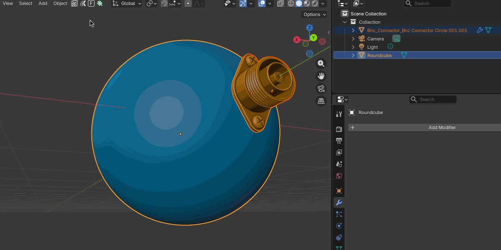

Conform Object Modifier
Note
Blender 4.5 or higher.
Modifier Overview
The Conform Object modifier gives users an alternative more configurable way to project the geometry of one object onto the surface of another.
As it is a modifier, the mesh can be adjusted, animated, and re-conformed in real-time.
The resulting deformation can be controlled as before using gradients, offset distance, normal blending, and grid-based smoothing.
Advantages
Real-time feedback when adjusting the source mesh.
Non-destructive workflow with the ability to stack multiple modifiers.
Compatibility with other modifiers in the stack.
Animation support for parameters.
Disadvantages
The Lattice Deformation feature is currently not supported in the modifier.
Less tried and tested than the operator version.
Note
If you have any questions about using the Conform Object Modifier, please contact us.
Basic Usage

Follow the instructions in the operator version, but instead of selecting the Conform Object menu option, select Add Conform Object Modifier from the menu panel instead.
Note
Remember to align the object correctly before adding the modifier.
Modifier Options
Note
See the add-on’s main Options section for detailed information on how to use the options below.
Target Object
Specifies the object onto which the source geometry will be conformed.
Amount
Controls the strength of the conform deformation.
`0.0`: No deformation
`1.0`: Full conformity
Modifier Projection
Controls how vertices are projected toward the target surface.
Offset
Adds an offset distance after projection along the projection direction. Good for Floating geometry above the target and creating spacing for decals.
Center Point
Defines the reference point used when calculating projection directions.
Middle Point: Uses the bounding box center of the source object
World Center: Uses the object’s origin point in the scene.
Modifier Method
Defines how vertices are projected out from the target object.
Surface: Projects outward the target surface’s face directions.
Direct: Projects vertices in one direction from the target volume.
Modifier Direction
Controls how projection directions from source to target are calculated.
Auto: Automatically determines a suitable projection direction, either by axis line, or if not the nearest point.
Axis Line: Projects along the object’s -Z axis.
Nearest: Finds the nearest point on the target object from the source object.
Custom: Uses a user-defined projection direction.
Modifier Gradient Effect
See the Gradient Effect section in the main documentation for full details.
Applies a spatial falloff, allowing partial deformation across the mesh.
Start
Defines where the gradient begins.
End
Defines where the gradient reaches full effect.
Vertices between Start and End are progressively affected.
Modifier Blend Normals
See the Blend Normals section in the main documentation for full details.
Blends the surface normals of the source object with those of the target.
This improves shading continuity.
Blend Start
Defines where normal blending begins.
Blend End
Defines where full normal blending is reached.
Deformation Grid
Controls the hidden backing grid that defines the deformation. See How Does it Work? for more information.
Display Grid
Displays the deformation grid as a wireframe in the viewport for debugging and tuning.
Note
The viewport must be set to Wireframe or Solid mode to view the grid.
Subdivision X / Y
Controls grid resolution.
Higher values increase smoothness
Lower values improve performance
Grid Smoothing
Applies subdivision surface smoothing to the deformation grid.
Useful for removing minor surface artifacts and softening transitions in the deformation.
Workflow Tips
If your object has quad based topology, placing Subdivision Surface before Conform Object in the modifier stack can make the object deform more smoothly.
Questions?
If you have any questions about using the Conform Object Modifier, please contact us.